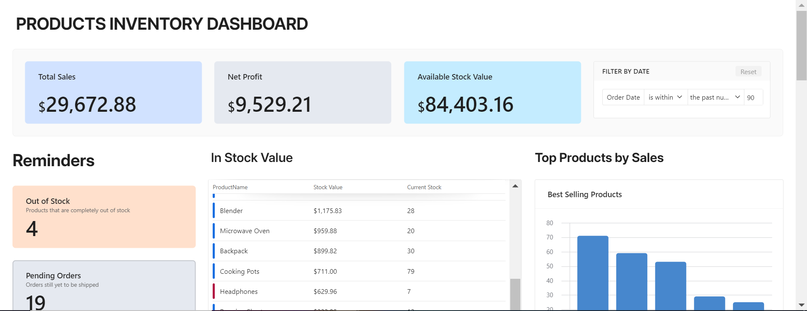
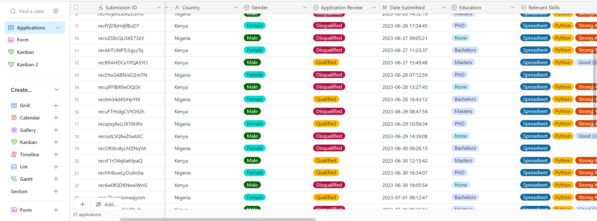

This is a comprehensive inventory system designed to:
Monitor order statuses, including whether they have been shipped or not.
Provide up-to-date insights into current stock levels.
Offer crucial performance metrics to help assess business performance.

This Automated System is crafted to oversee the staff hiring process efficiently.
It reviews applications to ensure they meet all eligibility criteria, qualifying those that do and disqualifying the rest.
The system keeps applicants informed about their application status and next steps.
This is an automated system designed to manage customer complaints and feedback. It automatically assigns support agents to each customer, keeps customers informed about the status of their complaints, and tracks support performance. Additionally, the system monitors feedback and complaints to identify areas for improvement in customer service
Try Kibo (TK) is an online tech certification program. I developed a management system for handling applications to the Try Kibo program. This system sends notifications via WhatsApp and email to applicants, tracking their progress from the signup stage until enrollment.